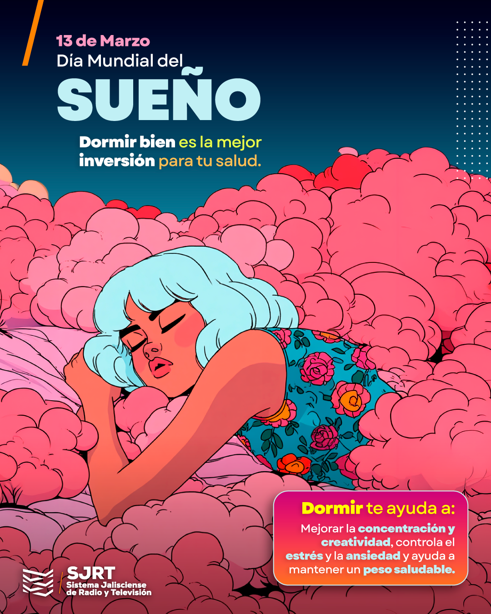
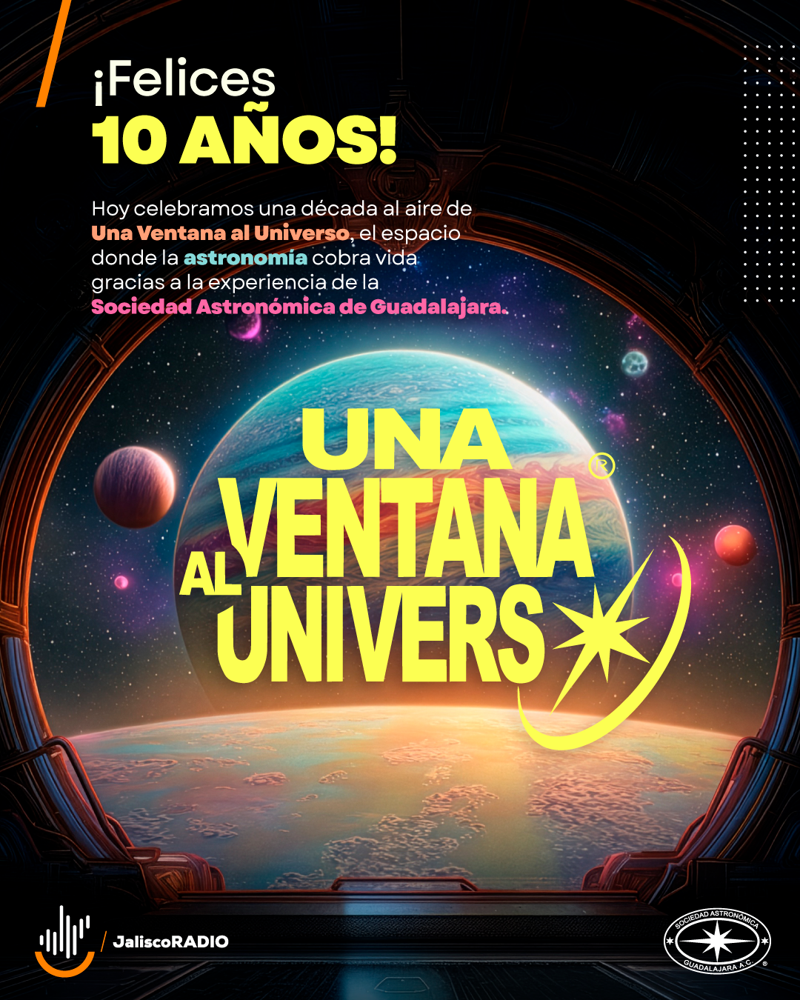

SJRT publishes daily across TV, radio and social, including a running series of visual "postcards" tied to whatever's happening that day: a commemorative date, a cultural figure, a public-health awareness campaign. Producing that volume by hand was eating real hours every week.
I built a generative visual system in p5.js that pulls live conditions from a Weather API and renders on-brand templates automatically: color, motion and composition responding to the actual weather rather than a static illustration. It's a working example of design, code and data operating as one pipeline instead of three separate handoffs.
The system now handles a meaningful share of SJRT's daily postcard production automatically, cutting manual work by 10+ hours a week and lifting engagement roughly 30% versus the previous static templates, freeing the design team to spend that time on the pieces that actually need a human hand.



